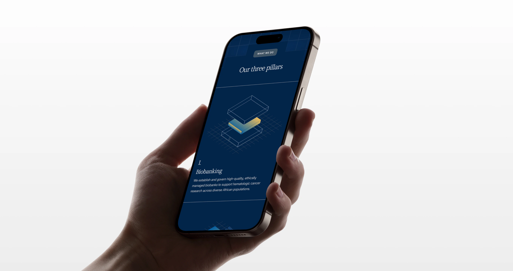
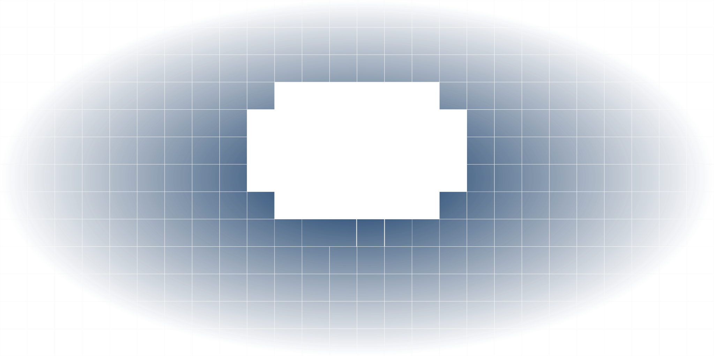
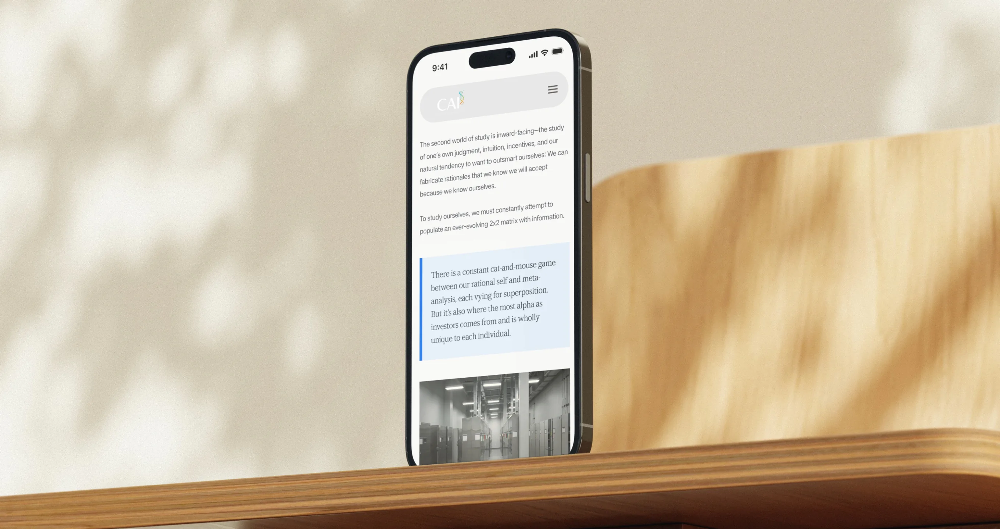
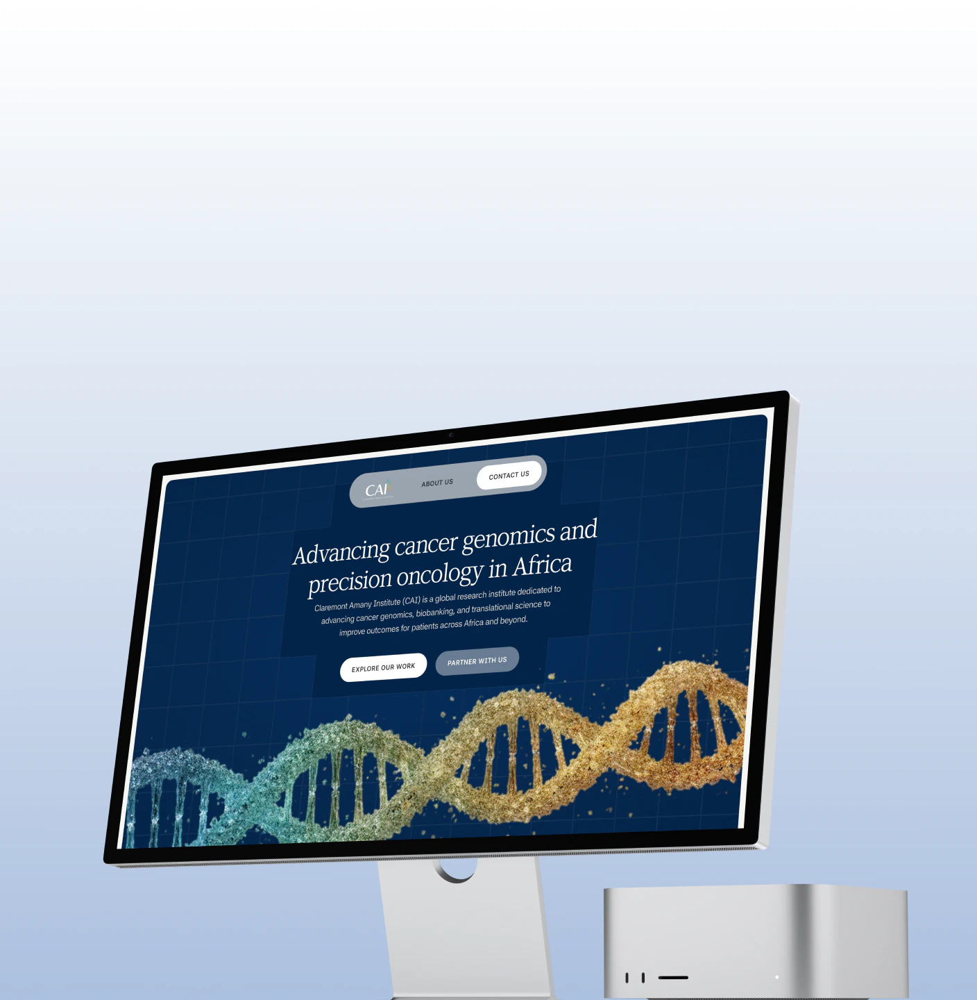
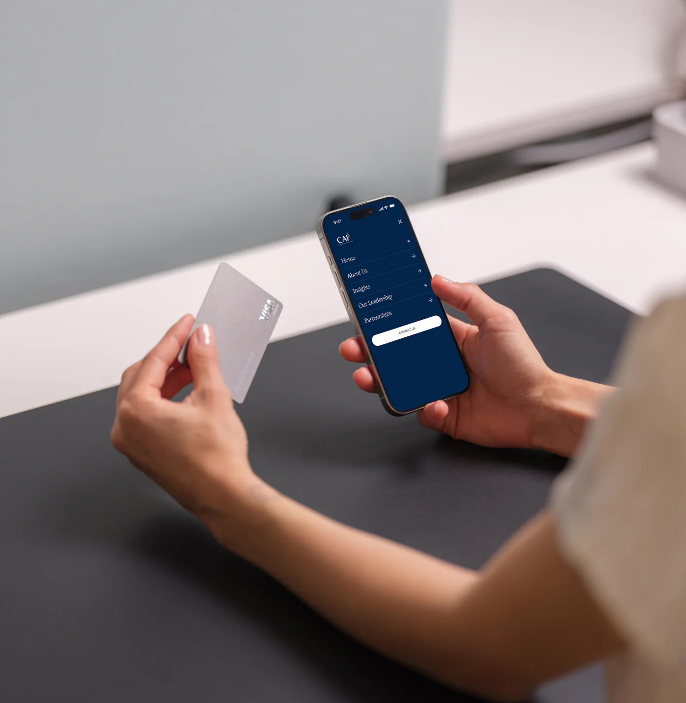

A quiet digital presence for serious research.
Claremont Amany is a nonprofit research organisation working across cancer genomics, precision oncology, and research infrastructure in Africa.
The brief was straightforward: create a website that felt credible, mature, and important without becoming overly designed.
The challenge was finding the balance between institutional credibility and visual restraint.
01
The Brief
Claremont Amany needed a digital presence that could communicate the weight of its work without relying on visual excess.
They didn’t want a website filled with flashy interactions, oversized graphics, or unnecessary decoration. They wanted something simple and modest — but still sophisticated enough to represent an organisation doing serious research.
So we treated restraint as a design principle rather than a limitation.
The goal was to make the website feel established, considered, and quietly confident.

02
Designing With Restraint
Research-driven organisations often have a lot of information to communicate.
Our approach was to avoid competing with that information.
We focused on creating a clear visual hierarchy, generous spacing, considered typography, and a restrained visual system that allowed the content to carry the experience.
Every element had a job.
Nothing needed to shout.

03
Typography
Typography became one of the primary tools for establishing the site’s character.
The direction called for a serif typeface, so we explored options that could bring an editorial and institutional quality to the experience without making it feel dated.
The final typographic direction was intentionally refined — giving the site a sense of authority while maintaining readability and accessibility.
The type needed to feel like it belonged to an organisation dealing with serious research, not a generic technology company.
04
Making Assets Feel Present — Without Being Overpowering
One of the visual challenges was figuring out how to use supporting assets without allowing them to dominate the interface.
We wanted the assets to be visible, but not constantly visible.
Instead of using conventional filled illustrations or highly detailed graphics, we reduced the assets into stroked forms.
This gave them a quieter presence within the layouts. They could sit alongside the content without competing with it.
But we didn’t want them to feel completely static either.
05
A Small Moment of Discovery
The stroked assets became interactive.
When a visitor hovers over one, a subtle gradient glint moves through the form.
It is deliberately understated.
The asset doesn’t suddenly transform or demand attention. It simply reveals another layer of the visual system for a moment.
This became a small but important part of the experience:
The visuals are there when you look for them.

06
The Experience
Beyond the visual direction, we approached the website through the fundamentals of a strong digital experience.
- Clear information architecture.
- Straightforward navigation.
- Strong content hierarchy.
- Responsive layouts.
- Careful spacing.
- Accessible typography.
- And interactions that support the experience rather than distract from it.
The result is a website designed to feel confident without needing to announce its confidence.


07
The Outcome
The final experience gives Claremont Amany a digital presence that reflects the nature of its work — serious, considered, and forward-looking.
Rather than trying to make the organisation feel bigger through visual spectacle, the design creates authority through clarity, restraint, and attention to detail.
The website doesn’t need to tell visitors that the work is important.
It behaves like it is.